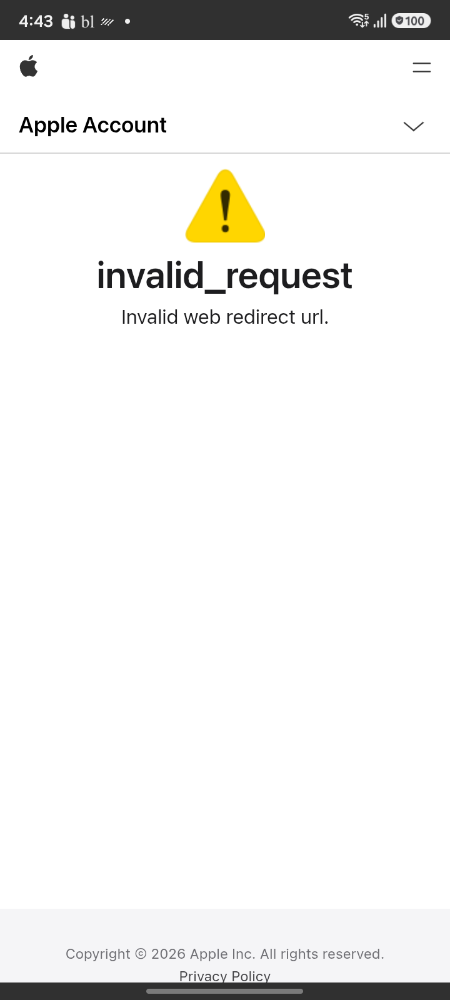

🐞 Bug Investigation Dashboard
Suite: Regression Execution: 191.94 sec
2
Total
2
Failed
2
Critical
0
Major
0
Minor
Combined AI Assessment
Executive summary
The Maestro test execution surfaced significant issues across both functional and visual verification layers. Scenario SC_12 failed with cross-device visual mismatches, but no specific functional or UI issues were called out by screenshot AI—indicating likely dynamic-content or rendering variances, not core functionality breaks. Scenario SC_16 was cancelled due to a critical functional failure: users encountering an error state see no actionable guidance or navigation, leaving the interface in a blank, unrecoverable state. This represents a severe usability and flow-blocking bug. No spurious noise or benign visual regressions were present.
Release recommendation
Release not recommended until the critical error-handling and recovery UI issues from SC_16 are remediated.
- Irrecoverable error state with no navigation options (SC_16)
- User abandonment during error experience due to lack of actionable UI (SC_16)
- Potential device- or data-driven visual inconsistency (SC_12), but non-blocking
Reference: Google Pixel 9 Pro — App 2501.20.802
Actual: samsung SM-E066B — App 2501.20.807
Combined Findings
BUG-001
SC_12
Subscriber_Article_Full_Read_Access
ISSUE
Run: FAIL
Combined evidence
95%
144.64 sec
Reason
Evidence detected by Run, Visual
Recommendation
Review the combined execution, screenshot-AI, and visual evidence.
Evidence sources
Run, Visual
Screenshot AI findings
None
Visual findings
Screenshot evidence
No screenshot was captured before this failure.
Reference / Actual / Difference


BUG-002
SC_16
SC 16 login with appleid
ISSUE
Run: CANCELLED
Combined evidence
95%
41.3 sec
Reason
Evidence detected by Run, Screenshot AI
Recommendation
Review the combined execution, screenshot-AI, and visual evidence.
Evidence sources
Run, Screenshot AI
Screenshot AI findings
Error state displayed with no guidance or actionable UI provided; large blank area and no navigation or recovery options.
Visual findings
None
📷 Screenshots
